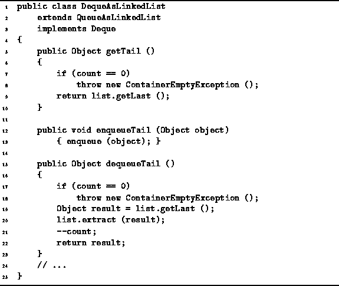

Data Structures and Algorithms
with Object-Oriented Design Patterns in Java
Data Structures and Algorithms
with Object-Oriented Design Patterns in Java
Program  defines the getTail,
enqueueTail, and dequeueTail methods
of the DequeAsArray class.
defines the getTail,
enqueueTail, and dequeueTail methods
of the DequeAsArray class.

Program: DequeAsLinkedList class ``Tail'' methods.
The getTail method
returns the object at the tail of the deque.
The tail of the deque is in the last element of the linked list.
In Chapter we saw that the running time of
LinkedList.getLast is a constant,
Therefore, the normal running time for the getTail method is O(1).
The enqueueTail method simply calls the enqueue method inherited from the QueueAsLinkedList class. Its running time was shown to be O(1).
The dequeueTail method removes an object from the tail
of the deque and returns that object.
First, it verifies that the deque is not empty
and throws an exception when it is.
If the deque is not empty,
dequeueTail saves the last item in the linked list
in the local variable result.
Then that item is extracted from the linked list.
When using the LinkedList class from Chapter ,
the time required to extract the last item from a list is O(n),
where  is the number of items in the list.
As a result,
the running time of dequeueTail is O(n).
is the number of items in the list.
As a result,
the running time of dequeueTail is O(n).
 Copyright © 1998 by Bruno R. Preiss, P.Eng. All rights reserved.
Copyright © 1998 by Bruno R. Preiss, P.Eng. All rights reserved.